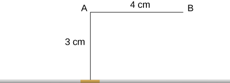
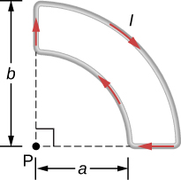
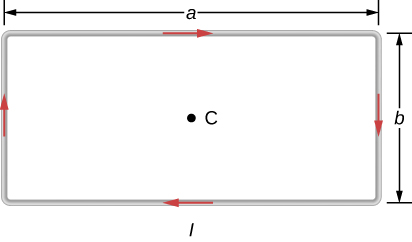
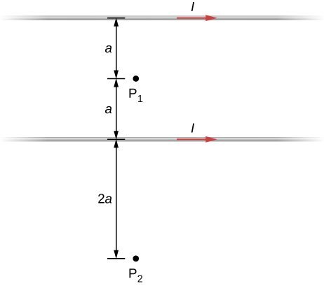
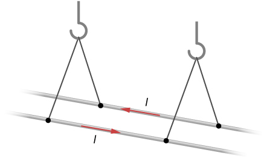
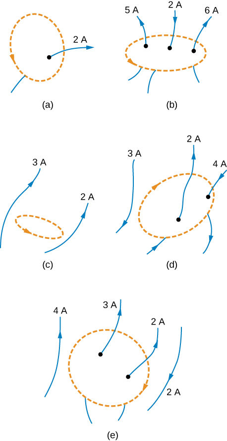
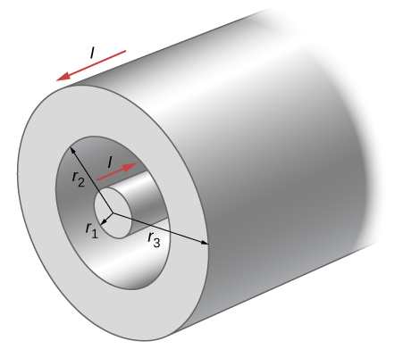

Phy 222 Homework 9: Continuous Current Distributions
Problem 9.1
A 10-A current flows through the wire shown. What is the magnitude of the magnetic field due to a 0.5-mm segment of wire as measured at point A and point B?

Problem 9.2
The accompanying figure shows a current loop consisting of two concentric circular arcs and two perpendicular radial lines. Determine the magnetic field at point P.

Problem 9.3
Find the magnetic field at the center C of the rectangular loop of wire shown in the accompanying figure.

Problem 9.4
A typical current in a lightning bolt is \(10^4~A\). Estimate the magnetic field \(1~m\) from the bolt.
Problem 9.5
The below figure shows two long, straight, horizontal wires that are parallel and a distance 2a apart. If both wires carry current I in the same direction, what is the magnetic field at P1 and P2?

Problem 9.6
Repeat the calculations of the preceding problem with the direction of the current in the lower wire reversed.
Problem 9.7
Three long, straight, parallel wires, all carrying \(I=20~A\), are positioned as shown in the below figure. What is the magnitude of the magnetic field at the point P?

Problem 9.8
Two long, parallel wires are hung by cords of length \(5.0~cm\), as shown in the accompanying figure. Each wire has a mass per unit length of \(30~g/m\), and they carry the same current in opposite directions. What is the current if the cords hang at \(6.0^\circ\) with respect to the vertical?

Problem 9.9
When the current through a circular loop is \(6.0 \, \mathrm{A}\), the magnetic field at its center is \(2.0 \times 10^{-4} \, \mathrm{T}\). What is the radius of the loop?
Problem 9.10
A flat, circular loop has \(20\) turns. The radius of the loop is \(10.0 \, \mathrm{cm}\) and the current through the wire is \(0.50 \, \mathrm{A}\). Determine the magnitude of the magnetic field at the center of the loop.
Problem 9.11
Evaluate \(\oint \mathbf{B} \cdot d\mathbf{l}\) (line integral) for each of the cases shown in the accompanying figure.

Problem 9.12
A portion of a long, cylindrical coaxial cable is shown in the accompanying figure. A current \(I\) flows down the center conductor, and this current is returned in the outer conductor. Determine the magnetic field in the regions (a) \(r \leq r_1\), (b) \(r_2 \geq r \geq r_1\), (c) \(r_3 \geq r \geq r_2\), and (d) \(r \geq r_3\). Assume that the current is distributed uniformly over the cross sections of the two parts of the cable.

\(~\)